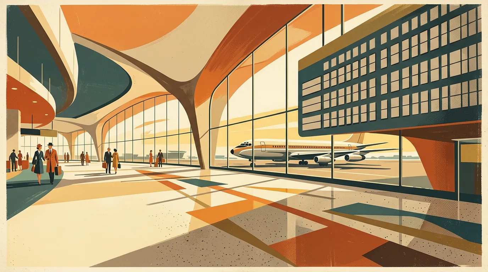
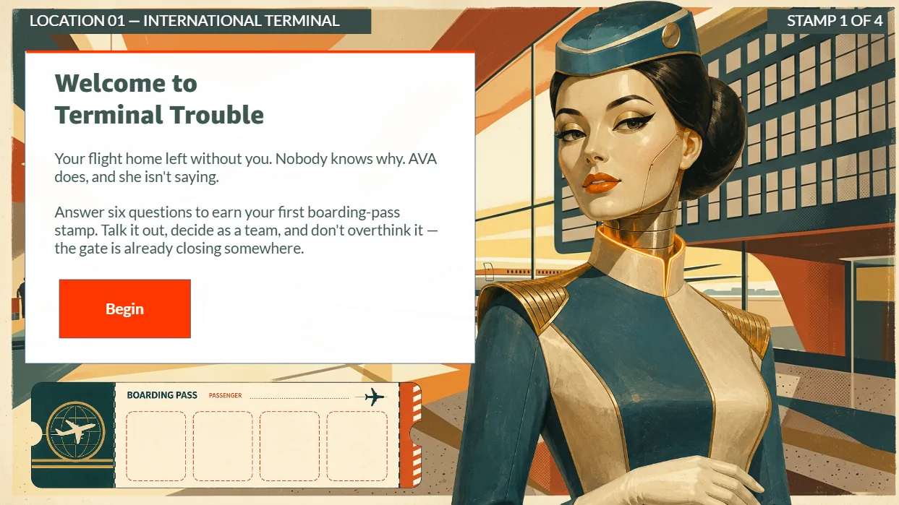
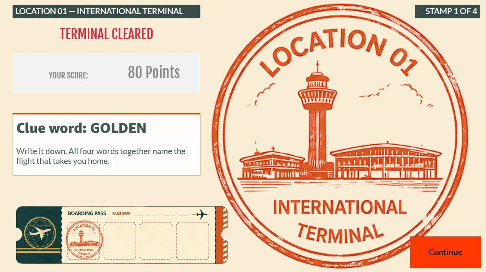
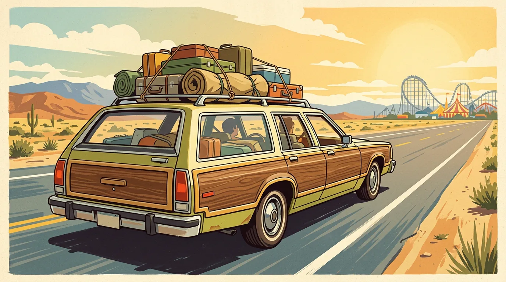

Interactive Experience DesignGame DesignArticulate Storyline
Vacation
Rescue
A multiplayer team experience that turns a virtual team event into a collaborative race home.
Designed & developed by Christopher Mathews
Project overview
- Role
- Experience Designer & Developer
- Platform
- Articulate Storyline
- Format
- Facilitated Multiplayer Experience
- Setting
- Remote Team Event · Microsoft Teams
- Status
- Deployed & Played
How do you turn a virtual team event into something people actually have to play together?
Remote team events drift toward passive participation: cameras off, one person talking, everyone else waiting it out. The brief was an activity that required real conversation and collaboration to succeed.
The answer wasn't a quiz. The digital experience and the live breakout-room structure were designed as one system.

Your vacation has gone off the rails.
Your team has one job: make it home first.
Players are stranded mid-trip and have to work their way home through four locations. AVA, the retro-futurist flight attendant, knows why the flight left without them — and she isn't saying.
-
A
Split into breakout roomsEach room becomes one competing team.
-
B
Pick one driverOne person shares their screen and runs the experience.
-
C
Solve it togetherEveryone else talks it through and decides as a team.
One loop.
Four locations.
Every location runs the same seven beats. The repetition lets teams learn the rhythm fast, so their attention goes to the challenges and each other — not the interface.
- 01 Arrive A new location and a new story beat.
- 02 Collaborate The team talks it through out loud.
- 03 Solve The driver locks in the team’s answers.
- 04 Score Points reward getting it right, not just fast.
- 05 Stamp The boarding pass earns a location stamp.
- 06 Clue One word toward the final flight.
- 07 Travel on Next location — or the run home.
- ACombine the clues
- BIdentify the flight
- CReturn to the main room
One location, start to stamp.
Location 01, the International Terminal, as the team sees it — arrival, a challenge round, and the payoff.


Every location combines seven parts.
- 01Narrative setup
- 02Collaborative questions
- 03Scoring
- 04Immediate feedback
- 05A location stamp
- 06A clue word
- 07Visible progress on the boarding pass
One driver. Everyone plays.
Only one participant touches the Storyline interface. That was deliberate: with a single set of controls, the only way to contribute is to talk.
The breakout room isn't a delivery channel — it's part of the interaction design. The game supplies challenges and state; the meeting supplies the multiplayer layer.
Engineered, not decorated.
Under the artwork is a working game state built with Storyline variables and triggers: points per challenge, four-location progression, stamps, clue collection, elapsed time and results — with replay logic so every path could be tested before the event.
One world, many stops.
A single retro-travel world — mid-century tourism advertising, jet-age illustration, passport stamps, boarding passes — keeps an airport, a highway and a beach feeling like one journey.
Artwork was generated, then art-directed to a shared palette and print texture — part of a wider generative production workflow covered in section 08.

Generated. Then directed.
Generative AI ran through the whole media stack, not just the artwork: still images, cinematic video moments, sound effects and environmental soundscapes.
None of it went in as generated. Every output was art-directed, selected, refined, edited, synchronized and built into Storyline, then tested inside the running game.
- 01 Art direction Define the world and the brief.
- 02 Generation Produce image, video and audio options.
- 03 Evaluation Judge fit, quality and consistency.
- 04 Iteration Re-prompt and refine.
- 05 Editing Trim, retouch, mix and sync.
- 06 Integration Build into Storyline.
- 07 Testing Check it plays right in context.
The tools produced options. The experience came from direction: deciding what fit the world, what got cut, and what played at the right moment.
Not a portfolio simulation. Built for a real event, deployed, and played.
- 01 Concept
- 02 Design
- 03 Development
- 04 Testing
- 05 Deployment
- 06 Real use
- Players
- ~25
- Competing teams
- 4
- Event length
- ~30 min
- Player verdict
- “Fun” — all of them
Vacation Rescue was built for a remote team event at my employer, a healthcare-services organization, and is shown here with permission. About 25 people played in four competing teams over a roughly 30-minute session in Microsoft Teams breakout rooms. One project covered the full path: experience design, game mechanics, visual direction, Storyline development, generative AI multimedia production — image, video, sound effects, and environmental soundscape creation and integration — facilitation design, testing and web deployment.
Every player said it was fun. That feedback was informal, not a survey. It tells me the experience landed. It doesn't prove that everyone took part, which was the actual design goal.
What I learnedConstraints shape behavior more than instructions do. Rather than asking people to participate, the design gave one person the controls, so talking was the only way to play.
A repeated loop frees attention. Every location runs the same seven beats, so a team's effort goes into the challenges and each other instead of learning a new interface at every stop.
Next time, I'd measure participation, not just reactions. A simple count of who spoke in each room would turn “everyone said it was fun” into evidence that the one-driver design worked.
Ready to take the trip?
Opens in a new tab · Best played with a team and one screen-sharing driver